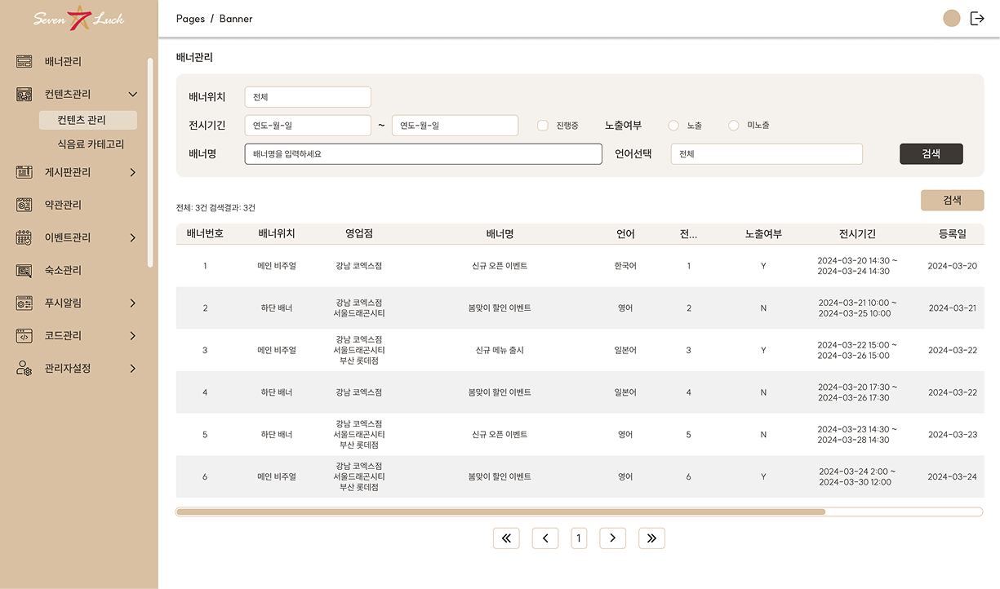
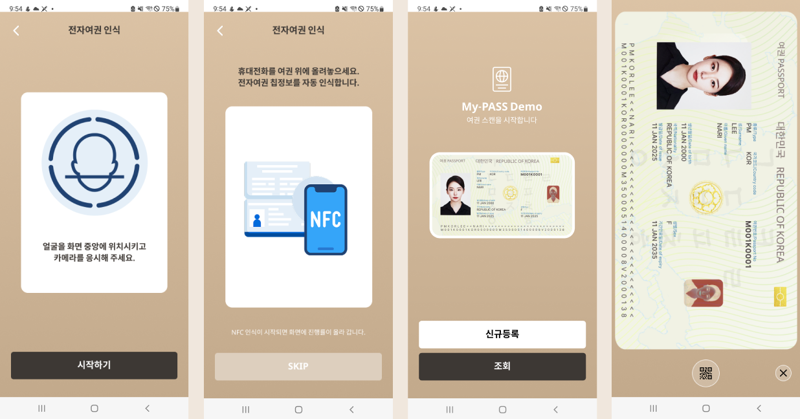
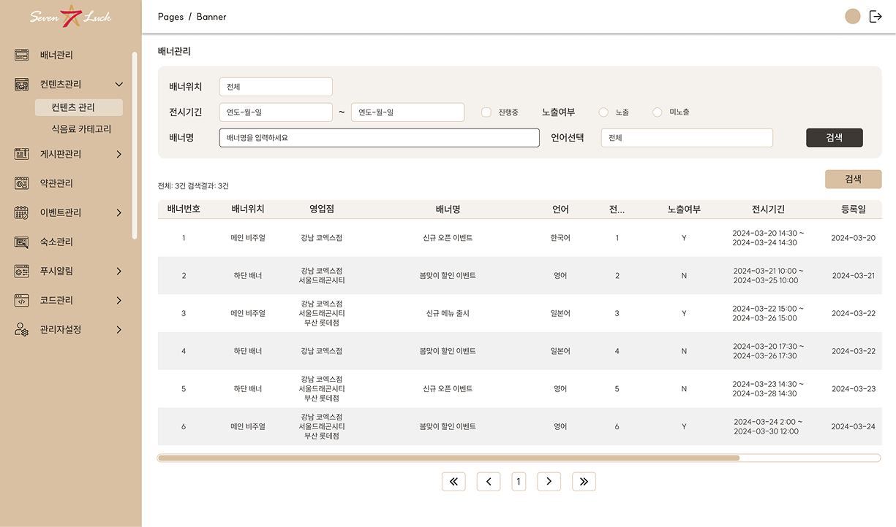
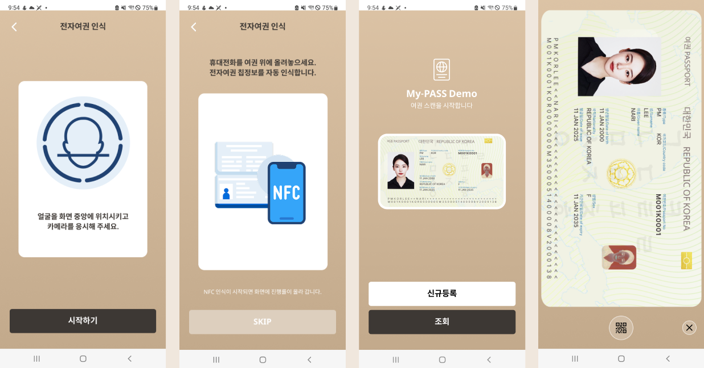

SevenLuck Casino
SevenLuck Casino, operated by Grand Korean Leisure (a subsidiary of the Korean Tourism Organization), is one of Korea’s leading casinos for foreigners. The company approached us for a complete design rebrand and the development of a new set of digital products.
My Contributions
- UI/UX design for a casino tablet app and mobile app
- Design and frontend development for an employee service system
- Creation of the Mypass app – an electronic passport for Korean and foreign guests
Design Highlights
All designs were developed to align with the casino’s branding and client requirements. The tablet interface supports multiple languages and ensures usability for international guests. The Mypass application visually reflects a real passport, serving as a digital ID. The internal service program for employees was redesigned for a cleaner, more intuitive user experience.
Gallery
 



×